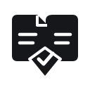

精修 A02A
双页合证
PAIRED PAGES

保留两份来源的轮廓，压低内部细节；核验菱形向上嵌入两页之间，不再像悬挂的徽章。
32 px16 px直观 / 稳定
保留“双来源 → 核验结果”的核心概念，减少卡片内部装饰，让中心记号与外轮廓结合得更自然。
请优先看整体轮廓和气质，不必把图形逐笔读成流程图。

保留两份来源的轮廓，压低内部细节；核验菱形向上嵌入两页之间，不再像悬挂的徽章。
把两路来源处理成相向折面，中心检查记号更突出；外形紧凑，品牌感更强。
让两路形态汇成 V 与核验勾，顺带建立 VeriMind 的字母记忆；更简练，但语义更含蓄。